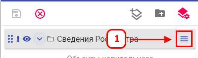
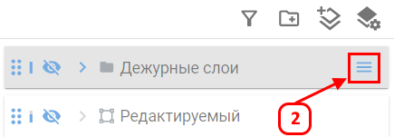
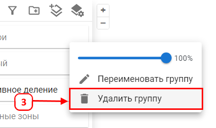
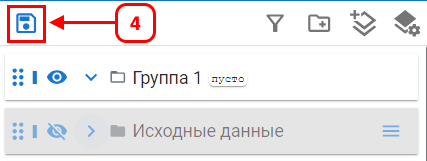

Удаление группы слоев
Удаление группы исключает ее из списка слоев. Все вложенные слои и группы также удаляются из проекта.
Для удаления группы выполните следующие шаги:




После этого группа со всеми вложениями будет удалена.